[v1.2.0 // 2024]
ARCHIVED // UTILITY
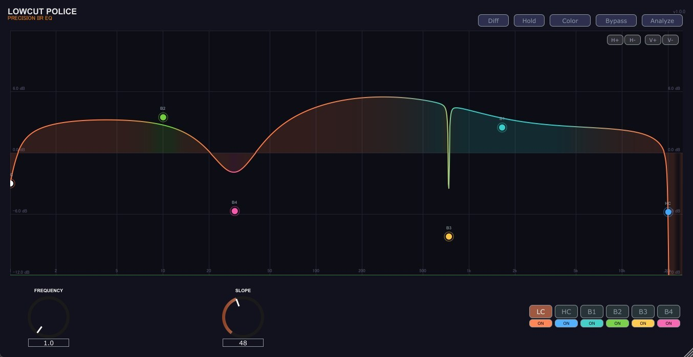
LowCut Police
LEGACY不要な超低域・DCオフセットを急峻にカットするリサーチグレード・ローカットフィルター。スピーカー保護とヘッドルームの最大化を支援。
VST3
WIN 10/11
ZERO LATENCY
過去バージョン・開発終了プラグインの保管庫。最新OSでの積極的メンテナンスは終了していますが、全ソースコードとビルド済みバイナリをGitHubにてオープンソース（OSS / フリーウェア）として公開しています。

不要な超低域・DCオフセットを急峻にカットするリサーチグレード・ローカットフィルター。スピーカー保護とヘッドルームの最大化を支援。
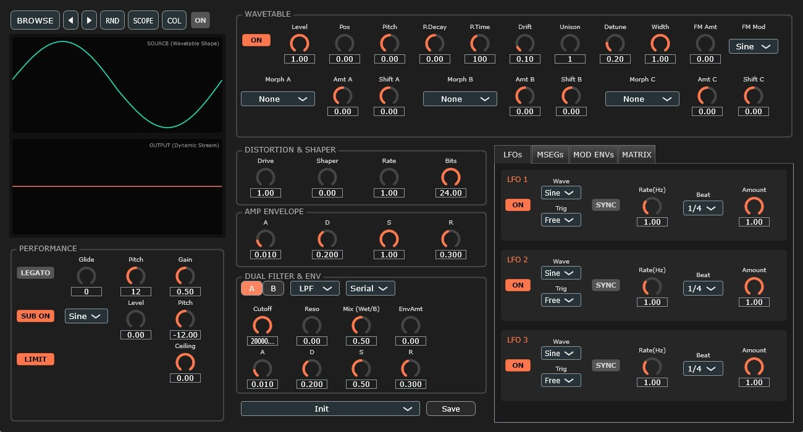
アナログモデリングによるファットなサブベース・ベースライン専用シンセサイザー。PolyBLEPオシレータとLadderフィルターを搭載。
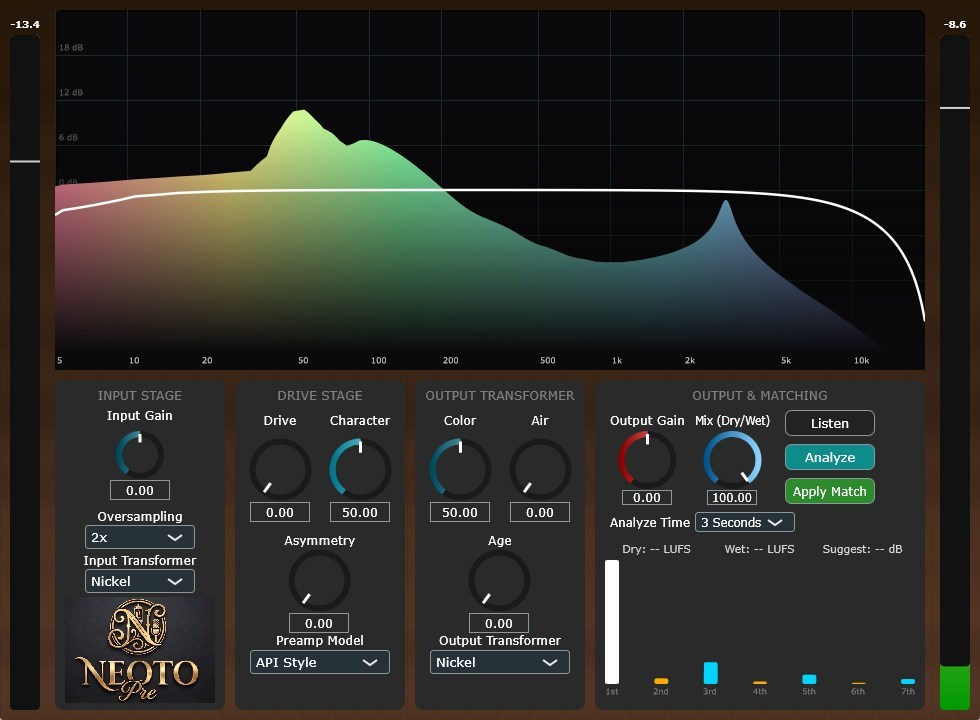
ヴィンテージ真空管プリアンプの倍音と暖かみを付加するサチュレーション・プロセッサー。繊細なカラーリングから力強いドライブまで。
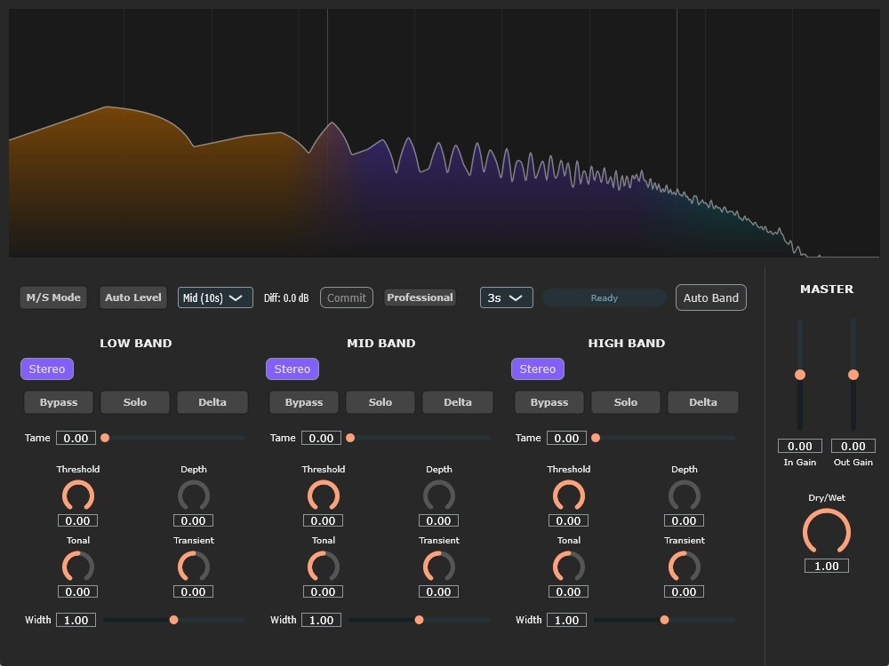
きらびやかな倍音と透明感のあるサウンドスケープを描くアンビエント・シンセサイザー。シマーリバーブと広大な音響空間。
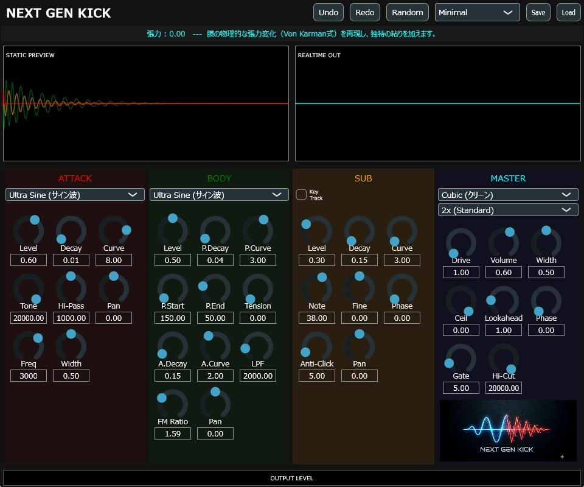
初代NEXT GEN KICK。高速エンベロープとピッチベンドによる先鋭的エレクトロニックキックジェネレーター。現行NextGenKick2の前身。
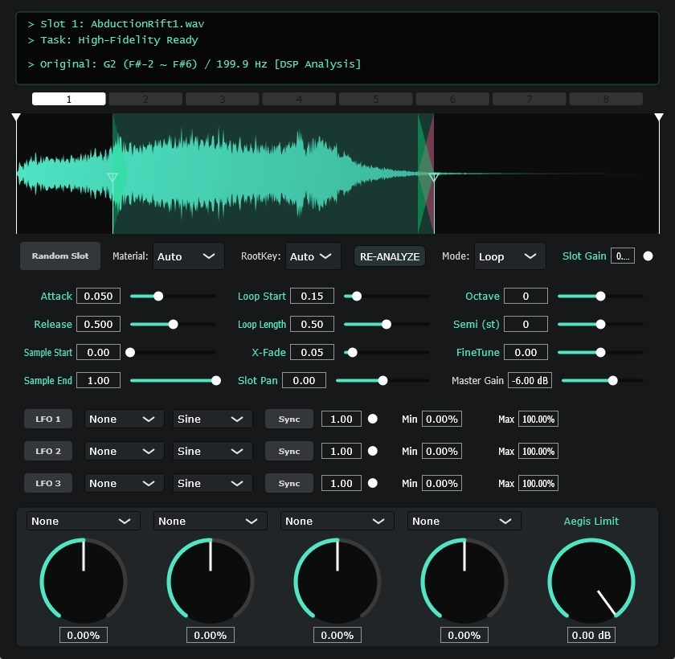
PicoSamplerの前身となった初期サンプラー。ドラッグ＆ドロップ再生と直感的な波形スライス機能を備えた原点。
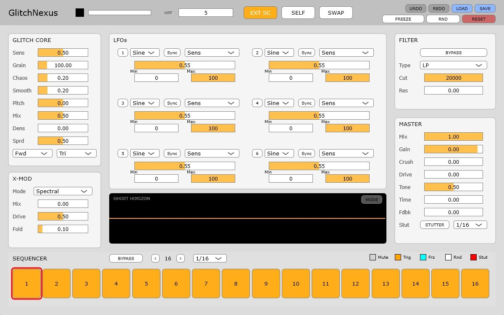
リアルタイム・バッファリピート、リバース、ビットクラッシュを連鎖させるグリッチFXプロセッサー。
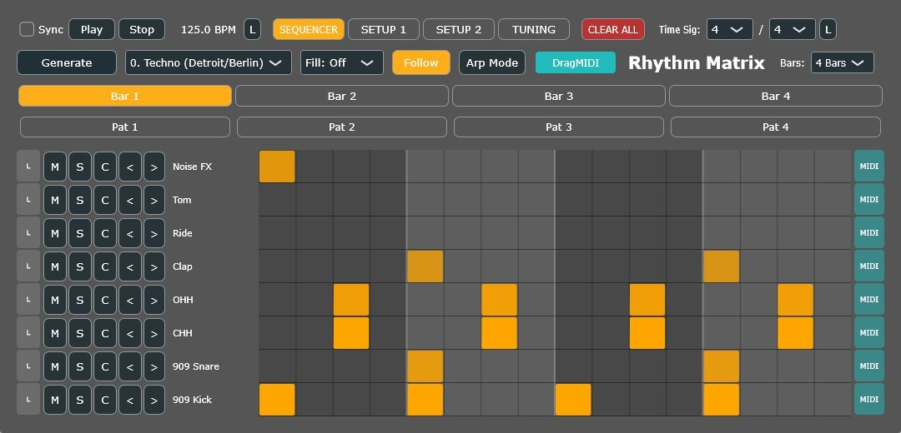
ポリリズムや幾何学ユークリッドリズムを視覚的にプログラミングする多機能リズムシーケンサー・MIDIツール。
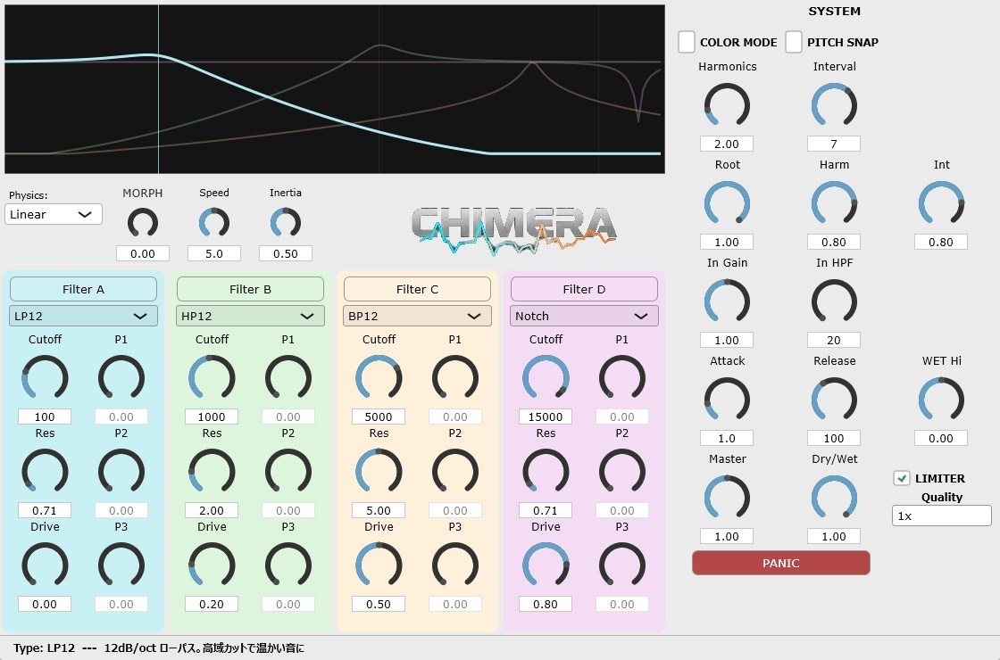
多重レゾナンスと異形カーブを生成するハイブリッド・マルチモードフィルター。Quad Morph Filterの初期実験モデル。
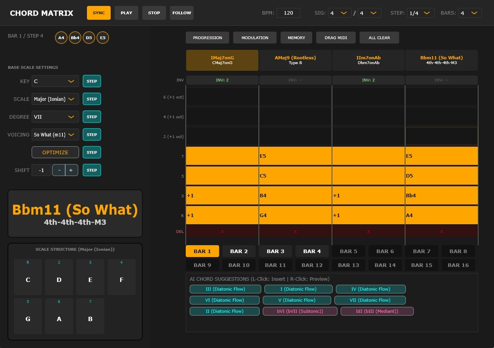
1キーで多彩なボイシング・テンションコードを出力するコード進行支援MIDIツール。スケール・モード・反転配置に対応。
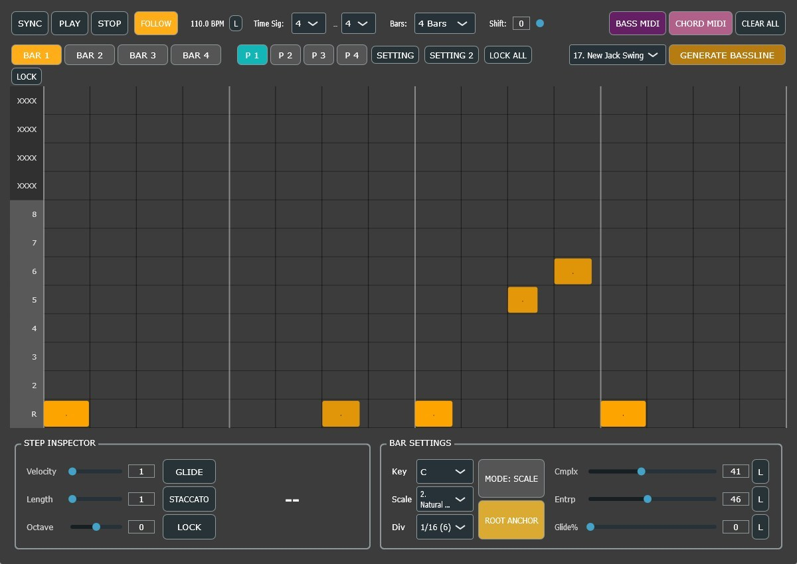
アシッドベースやファンキーなベースラインを自動生成するアシスタントMIDIツール。スライド・アクセント・スケール固定。
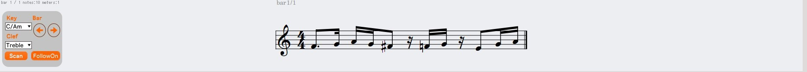
DAW再生と同期してMIDIノート・五線譜・コードネームをリアルタイム表示するスコアビューア。配信や学習に最適。
レガシービルドは現在メンテナンスを終了しています。最新OSやDAW環境での動作保証はありません。現行のアクティブサポート対応モジュールは『PLUGINS』ページをご確認ください。